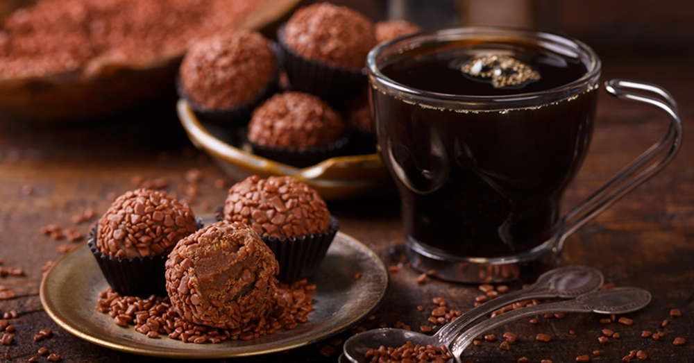

Brigadeiro com café

Description
O brigadeiro é um doce típico da culinária brasileira, de origem paulista,
que rapidamente se difundiu pelo resto do país,
tornando-se comum em todo o país a sua presença em festas de aniversário,
junto com doces como o cajuzinho e o beijinho.
Ingredients
- 1 lata de leite condensado
- 1 colher (sobremesa) cheia de chocolate em pó
- 1 colher (sobremesa) rasa de café
- 60 g de margarina
Steps
- Coloque o leite condensado, a margarina e o café em uma panela ao fogo
- Espere o café se dissolver (sempre mexendo para não grudar)
- Depois que o café estiver mais ou menos dissolvido, acrescente o chocolate em pó
- Abaixe o fogo e continue mexendo até dar o ponto de brigadeiro
- Se quiser enrolar, pegue uma pequena porção com uma colher e enrola na mão, depois passe no chocolate em pó